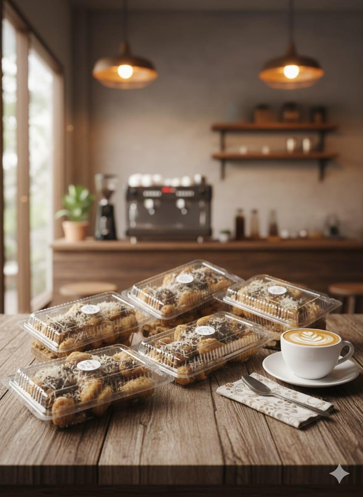
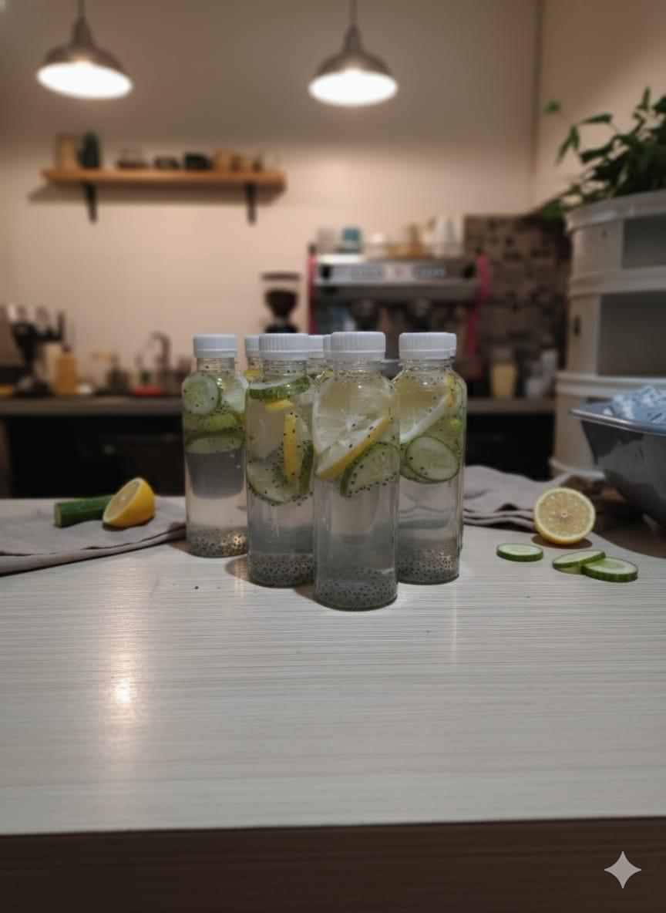
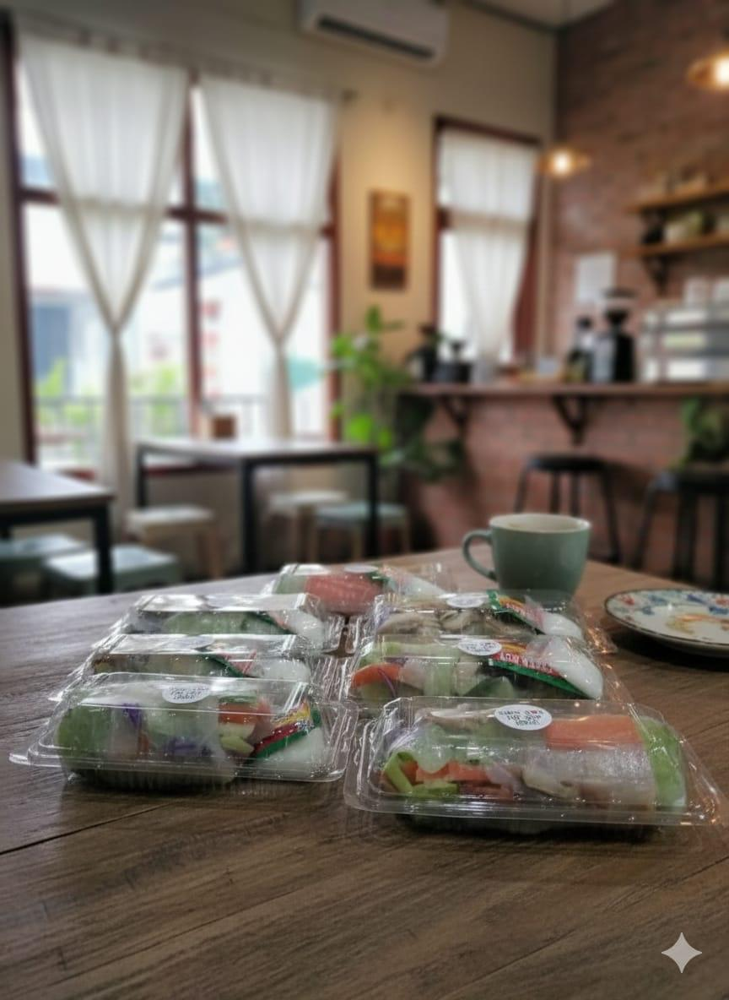
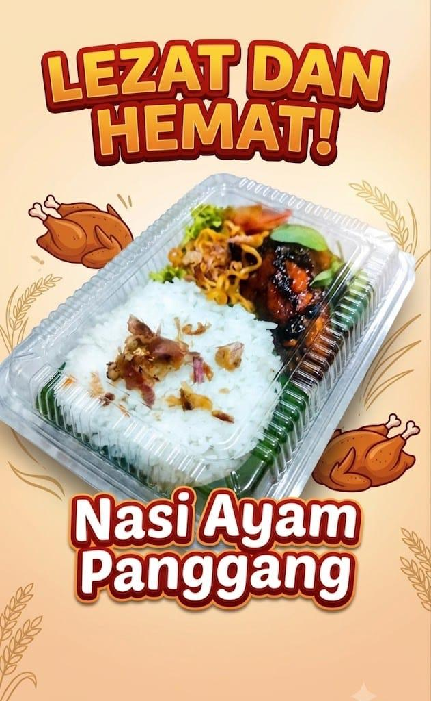
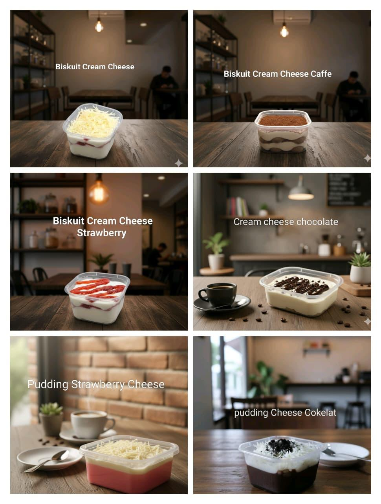

CAMILAN
Roti dengan Topping
Pilihan camilan dengan topping cokelat dan keju.
PILIHAN MENU
Makanan, camilan, minuman, dan dessert.

Pilihan camilan dengan topping cokelat dan keju.

Minuman dalam botol dengan irisan lemon dan timun.

Aneka camilan dalam kemasan praktis.

Nasi dengan ayam panggang dan lauk pendamping.

Biskuit cream cheese, varian kopi, strawberry dan cokelat, serta pudding cheese.